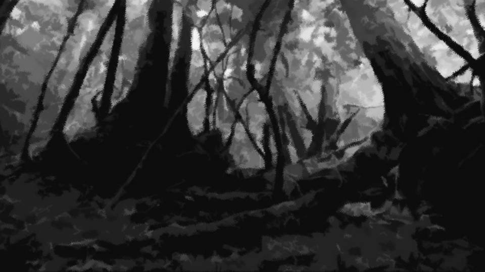
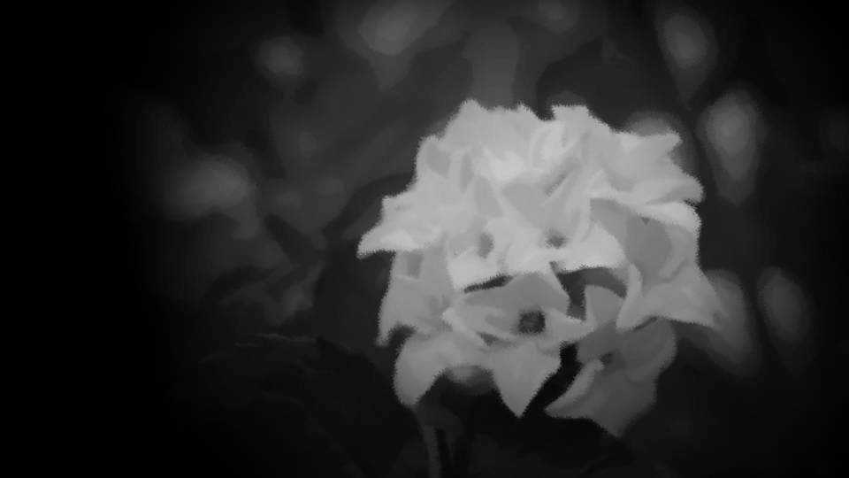

Script 0000245F

色々考え事をしたまま床についたが、それなりに眠れたようだ。
いつもは俺の隣で夏菜が眠っているが、今回は元木町組の部屋で一晩過ごしたようだ。
いつもは俺の隣で夏菜が眠っているが、今回は元木町組の部屋で一晩過ごしたようだ。

「おはよう」

「ん……お父さん、おはよう」
居間にいるのは茅萱だけ。
母さんと美冬ちゃんは台所のようだ。
元木町組はどうした？ まだ寝ているのか？
居間にいるのは茅萱だけ。
母さんと美冬ちゃんは台所のようだ。
元木町組はどうした？ まだ寝ているのか？
「夏菜はどうした？」
「ん……今朝起きたら春花たちもいなかったわ。その辺散歩しているんじゃないかしら」
「散歩か……。しかしこの時期に散歩だなんて……」
「ん……夏菜がついていれば大丈夫だと思うわ」
「ん……今朝起きたら春花たちもいなかったわ。その辺散歩しているんじゃないかしら」
「散歩か……。しかしこの時期に散歩だなんて……」
「ん……夏菜がついていれば大丈夫だと思うわ」
茅萱は妙に楽観的な気もする。
そう言えばもともと、継承の儀もみんなに見せるつもりだったと言っていたな。
今にして思えば、これもずいぶんと楽観的な話だ。
サクラたちが直接動くことはないだろうし、大丈夫だとは思うが。
しかし茅萱も母さんも、どうしてそんな危険なことを……。
そう言えばもともと、継承の儀もみんなに見せるつもりだったと言っていたな。
今にして思えば、これもずいぶんと楽観的な話だ。
サクラたちが直接動くことはないだろうし、大丈夫だとは思うが。
しかし茅萱も母さんも、どうしてそんな危険なことを……。

「さて、早めに食事を済ませて行くとするかね」

「私と茅萱ちゃんで祭具を取り出してきます。茅萱ちゃんにも地下倉庫の案内をしなきゃいけないし」

「ん……地下倉庫、ね……」
「どうかしたの？」
「ん……何でもない」
「どうかしたの？」
「ん……何でもない」
茅萱にとって地下倉庫はトラウマとも言える場所だろう。
10年前、茅萱はあの殺意に駆られて地下倉庫に監禁されていた。
今でもあの悪夢は鮮明なものに違いない。
10年前、茅萱はあの殺意に駆られて地下倉庫に監禁されていた。
今でもあの悪夢は鮮明なものに違いない。
「じゃあ、俺も散歩してくるよ」
「ん……いつものとこ？」
「ああ」
「ん……じゃあ途中まで一緒に行こう」
「ああ」
「ん……じゃあ途中まで一緒に行こう」

俺と茅萱、美冬ちゃんの3人は地下倉庫、および墓地広場へ通じる道を歩いていた。
いかにも春らしい心地のいい空気。
すがすがしいはずのこの時期に、毎年呪殺が起きている。
なぜ呪殺が起きているか、俺だけが知っている。
いかにも春らしい心地のいい空気。
すがすがしいはずのこの時期に、毎年呪殺が起きている。
なぜ呪殺が起きているか、俺だけが知っている。
サクラは約束してくれた。新村本家の人間には手を出さないと。
ならば他の住人たちを見殺しにしていいのか？
そのような葛藤、今まで何千回と繰り返してきた。
しかし今もこうして俺は……。
ならば他の住人たちを見殺しにしていいのか？
そのような葛藤、今まで何千回と繰り返してきた。
しかし今もこうして俺は……。
もう今さら後には退けない。
これまで犠牲になった人たち、その家族には申し訳ないと思っている。
俺が直接手を下したわけではないが、俺は知っていながらずっと黙っていた。
もし俺がこのことを公にしたら――。
これまで犠牲になった人たち、その家族には申し訳ないと思っている。
俺が直接手を下したわけではないが、俺は知っていながらずっと黙っていた。
もし俺がこのことを公にしたら――。
そしたら死月妖花の望み通り、ここから人間はいなくなるだろう。
しかし同時に、俺はサクラと会えなくなる。
サクラは動く死体としての役目を終え、死月妖花に取り込まれ、もはや神使の姿でも会うことはできないだろう。
しかし同時に、俺はサクラと会えなくなる。
サクラは動く死体としての役目を終え、死月妖花に取り込まれ、もはや神使の姿でも会うことはできないだろう。
俺は何をしているのだろうか。
今年、全ての神使が揃う。
だからどちらにしてもサクラとはもう会えなくなる。
あるいは、俺が今まで死月妖花に協力したことで、もう少しその時間を先にしてもらえるのだろうか。
今年、全ての神使が揃う。
だからどちらにしてもサクラとはもう会えなくなる。
あるいは、俺が今まで死月妖花に協力したことで、もう少しその時間を先にしてもらえるのだろうか。
ここから人がいなくなれば、もはや死月妖花の脅威はなくなる。
子実体を持ち出されることもなくなり、この地で伸び伸びと繁殖できる。
そう、死月妖花はただ静かにここで過ごしていたいだけ。
子実体を持ち出されることもなくなり、この地で伸び伸びと繁殖できる。
そう、死月妖花はただ静かにここで過ごしていたいだけ。
しかし最近思う。
もしサクラと永遠に一緒にいたいと思うなら、俺が生きた第一世代になればいい。
それならサクラとずっと一緒だ。
だが俺の自我はどうなるのだろうか。
人間としての自我が埋没し、ただ意思のない死月妖花の器官に成り下がるのではないだろうか。
そうなってしまっては何の意味もない。
もしサクラと永遠に一緒にいたいと思うなら、俺が生きた第一世代になればいい。
それならサクラとずっと一緒だ。
だが俺の自我はどうなるのだろうか。
人間としての自我が埋没し、ただ意思のない死月妖花の器官に成り下がるのではないだろうか。
そうなってしまっては何の意味もない。
「ん……お父さん、着いたわ。沈丁花の花、摘んでいくの？」
「ああ、そのまま渓流に行くよ」
「ん……私とおばさんは祭具を取ったら、そのまま法要の準備に行くわね」
「分かった。じゃあ、また法要で」
「ああ、そのまま渓流に行くよ」
「ん……私とおばさんは祭具を取ったら、そのまま法要の準備に行くわね」
「分かった。じゃあ、また法要で」
茅萱と美冬ちゃんは、夏菜の秘密基地――地下倉庫の方へ向かって行った。
この間に俺はサクラの好きだった沈丁花を摘み、2人がいなくなったところで俺も地下へ行く。
この間に俺はサクラの好きだった沈丁花を摘み、2人がいなくなったところで俺も地下へ行く。

「幸太郎、私たち、もう来月には夫婦になるのね」
「はは、俺たちが夫婦って言われてもな。なんだかあまり実感がないな」
「まあ！ 幸太郎から結婚しようって言ったくせに！」
「ははは、悪い悪い！」
「はは、俺たちが夫婦って言われてもな。なんだかあまり実感がないな」
「まあ！ 幸太郎から結婚しようって言ったくせに！」
「ははは、悪い悪い！」
俺とサクラは高校を卒業し、五月になると同時に結婚する予定だった。
四月でもよかったのだが、この時期に荒田の人間は死ぬ。
そのような弔事と慶事が同じ時期に並ぶのはどうかと母さんに言われ、五月ということに決まったのだ。
四月でもよかったのだが、この時期に荒田の人間は死ぬ。
そのような弔事と慶事が同じ時期に並ぶのはどうかと母さんに言われ、五月ということに決まったのだ。
「ねえ幸太郎」
「ん？」
「幸太郎は、子供何人欲しい？」
「こ、子供か……」
「やっぱりこういう集落だし、子宝に恵まれた方がいいよね？」
「そうだな。はは、サクラは気が早いな」
「ん？」
「幸太郎は、子供何人欲しい？」
「こ、子供か……」
「やっぱりこういう集落だし、子宝に恵まれた方がいいよね？」
「そうだな。はは、サクラは気が早いな」
「あ、幸太郎、沈丁花！」
サクラの指さす先に、背の低い薄桃色の花が顔をそろえていた。
サクラの指さす先に、背の低い薄桃色の花が顔をそろえていた。

「ここの遅咲きの沈丁花は、桜の時期とも重なるよな」
「私、沈丁花が好きなの」
「へえ、それは初めて聞いたな」
「私、沈丁花が好きなの」
「へえ、それは初めて聞いたな」
「うん、最近そう思うようになったの。
だって……桜とはまるで正反対だから」
「…………」
サクラは自分の容姿が嫌いだと言う。
このような美貌を持ったがゆえ、中学高校ではいざこざに巻き込まれやすかった。
それ以前に、目立つのを好まないサクラは、小学生の時から周囲の目を気にしていた。
「…………」
サクラは自分の容姿が嫌いだと言う。
このような美貌を持ったがゆえ、中学高校ではいざこざに巻き込まれやすかった。
それ以前に、目立つのを好まないサクラは、小学生の時から周囲の目を気にしていた。
自分の名前を冠した桜の花。
沈丁花はその桜とは正反対だと、時々サクラは言っていた。
沈丁花はその桜とは正反対だと、時々サクラは言っていた。
「沈丁花って、背も低いし桜に比べたら華もない。
まるでアジサイみたいで、晴れよりも雨が似合う」
「…………」
「幸太郎、沈丁花の花言葉ってね…… 不死、不滅、永遠なんだって」
「不死、不滅、永遠……」
「…………」
「幸太郎、沈丁花の花言葉ってね…… 不死、不滅、永遠なんだって」
「不死、不滅、永遠……」
「ねえ、もしもだよ？
もし私が死んだら、この花を供えてちょうだい」
「おい……」
「ごめん、変な話して……」
「………… 分かったよ、覚えておく」
「おい……」
「ごめん、変な話して……」
「………… 分かったよ、覚えておく」

この10年で、俺はいくつの沈丁花を摘んだだろうか。
死してなお俺の前に現れるサクラに、この花を供え続けている。
俺がサクラにできることって……それだけだ。
死してなお俺の前に現れるサクラに、この花を供え続けている。
俺がサクラにできることって……それだけだ。

俺はいつものように沈丁花を摘み、地下倉庫へ向かった。
時々、サクラの死体が見つかった渓流にも供えている。
でもそれはカムフラージュ。
俺はこれを持って、あの場所へ行くのだ。
時々、サクラの死体が見つかった渓流にも供えている。
でもそれはカムフラージュ。
俺はこれを持って、あの場所へ行くのだ。
――！？
人の気配を察知し、俺は身を隠す。
茅萱たちと別れてからずいぶん時間が経つが、まだ何かしているのか？
人の気配を察知し、俺は身を隠す。
茅萱たちと別れてからずいぶん時間が経つが、まだ何かしているのか？
あれは春花ちゃんか？
夏菜も、なつみちゃんも五島ちゃんもいる。
なるほど、早朝の散歩ってそういうことだったのか。
あの地下空間に何かあるとでも思ったのだろう。
夏菜も、なつみちゃんも五島ちゃんもいる。
なるほど、早朝の散歩ってそういうことだったのか。
あの地下空間に何かあるとでも思ったのだろう。
しかし、あの場所へは行けなかっただろう。
あそこへ行くには今俺が持っている鍵が必要だ。
あの鉄格子の扉は、2代前の大魔女がつけたらしい。
名目上は落盤があったから、と言うことになっている。
あそこへ行くには今俺が持っている鍵が必要だ。
あの鉄格子の扉は、2代前の大魔女がつけたらしい。
名目上は落盤があったから、と言うことになっている。
だが実際はそうではない。
あの場所にはヴェルジのミイラが封印されているのだ。
あれは絶対に住人たちの前に晒すわけにはいかない。
もしそのミイラの存在がみんなに知れたら、第三世代である俺の娘たちはどうなってしまうか。
あの場所にはヴェルジのミイラが封印されているのだ。
あれは絶対に住人たちの前に晒すわけにはいかない。
もしそのミイラの存在がみんなに知れたら、第三世代である俺の娘たちはどうなってしまうか。
幸いにも神使となったサクラは、あそこにヴェルジのミイラが封印されているとは知らないらしい。
いくら神使と言えど、桜の花粉が入らない場所のことは分からないようだ。
例えサクラであっても、ヴェルジのミイラのことは絶対に言えない。
いくら神使と言えど、桜の花粉が入らない場所のことは分からないようだ。
例えサクラであっても、ヴェルジのミイラのことは絶対に言えない。
よし、みんな去ったようだ。
急いであの場所へ行き、サクラに現状を説明する。
なつみちゃんを地下へ誘導したら、速やかに神使になるよう口説かせる。
急いであの場所へ行き、サクラに現状を説明する。
なつみちゃんを地下へ誘導したら、速やかに神使になるよう口説かせる。

「サクラ、いるか？」
俺の声が洞内に響き渡る。
こう呼べば、サクラは100%現れる。
俺の声が洞内に響き渡る。
こう呼べば、サクラは100%現れる。
「幸太郎、今日は早いのね」
後ろから聞きなれた声。
本来なら聞こえるはずのない声。
後ろから聞きなれた声。
本来なら聞こえるはずのない声。